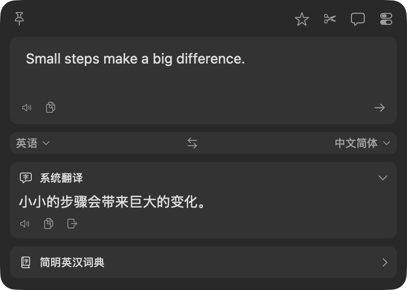
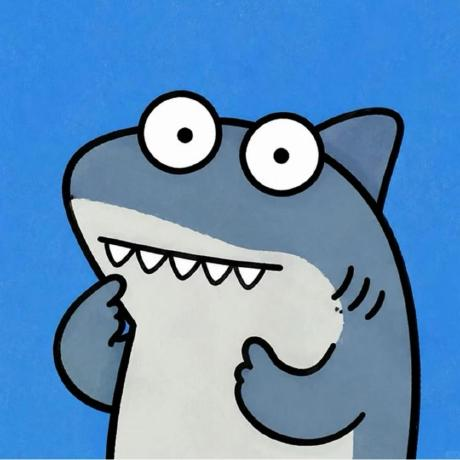

01~/workspace/关于我

HELLO, WORLD.
你好，我是
YEMIN11238.
把好奇心，
做成可以使用的作品。
我在做交互网页、macOS 工具、浏览器翻译扩展，也把界面经验整理成可复用的 Skill，偶尔做些小游戏。
CREATION WORKSPACEIDEA → INTERFACE → EXPERIENCE
INPUT日常里的小问题界面与交互灵感
好奇心
变成作品
EXPLORE · MAKE · REFINE 从真实需求出发每一个入口，都有实际作品
01 /
浏览作品 ↗从这些作品开始
~/workspace/作品集
SELECTED CREATIONS
一些想法，
已经可以打开了.


作品中的第三方品牌、素材与上游代码，按各仓库说明保留来源及权利。
~/workspace/工具与 Skill
REUSABLE EXPLORATIONS
把界面经验，
留给下一次创作.
从玻璃材质到桌面面板，探索让已有界面更顺手的方式。


Glass UI 网页演示呈现网页内部的 CSS 模糊与高光。TO-DO Panel Glass 为 Apple Silicon 预览版，液态玻璃需要 macOS 26+，安装包未公证。
~/workspace/记录与分享
NOTES & UPDATES
作品之外，
也留下一些记录.
02 /
README & RELEASES项目里的公开记录
功能、使用方法与版本变化，都在各个项目的文档里。
Pop
macOS 划词翻译与 OCR
Wild Talker
浏览器双语翻译与 AI 阅读
Glass UI
玻璃界面的使用与实现
更多作品的说明，从作品集打开。
KEEP A TRACE.~/workspace/找到我
LET'S CONNECT
关于作品，
或者下一个好奇心.
可以在 GitHub 看代码和项目进展，也可以在小红书找到我。
✦
感谢你来逛逛。
下次，也许又有新作品。